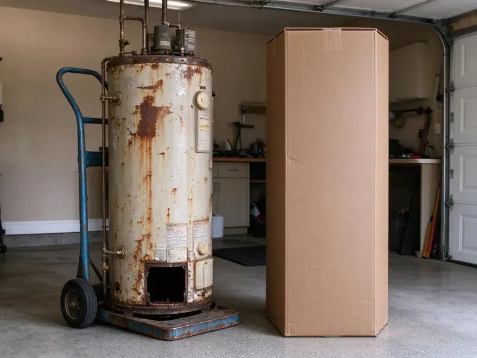

Pipe Replacement in South Burlington, VT
PEX-a or copper, your choice. CKV Plumbing handles repipes across South Burlington, VT.
- Durable Pipe
- Prompt Scheduling
- Upfront Pricing
- Nearby Crews
Rusty Water in South Burlington, VT? Call Us.
We pull the permit and book the inspector for you.
Long-Lasting Repipes for South Burlington, VT Homes
CKV Plumbing offers two main materials. PEX-a and copper. PEX runs in long flexible lengths with fewer fittings, costs less and goes in faster, while copper has a long track record and handles high heat well, and we explain the trade-offs before you choose. Both last decades.
Some of what we do:
- Galvanized pipe replacement
- Drain line and cast iron replacement
- Single-section pipe replacement

Additional Plumbing Replacement Services in South Burlington, VT
When repairs are no longer enough, our replacement services in South Burlington, VT deliver durable upgrades that restore full performance.


Customers
Why Choose CKV Plumbing for Pipe Replacement in South Burlington, VT?
Old pipe affects more than leaks. Rust and scale reduce flow. Galvanized pipe can lose much of its opening to rust over decades, and that shows up as weak showers and brown water. New pipe fixes all three.
- Clear Updates, You know what we are doing each day. No guesswork.
- Skilled Crews, Our plumbers do repipes most weeks and know how to route lines with minimal cuts.
- Code Compliant, We handle the permit and the inspection.
Citywide Coverage
Attic, crawlspace, slab or basement, we work with whatever your house has. Our crews cover South Burlington and nearby towns most days of the week, ready for any layout. Access rarely stops us.
Experienced Team
We train on diagnostics as much as installation. Some problems are local. Knowing the difference between a single bad joint and a failing system decides whether you need a small repair or a full repipe. We get it right.
Safety-First Approach
We protect the house during repiping. Floors get covered. Plastic sheeting controls dust, keeping your home livable. Clean work.
Trusted Certified South Burlington Plumbing Services Professionals
At CKV Plumbing, we are proud to offer certified plumbing services throughout South Burlington, VT. Those papers on the wall mean something. Every repair, install and maintenance visit follows strict safety and quality rules, and the plumbers doing the work carry recognized industry credentials.
Call Us Now PHCC Plumbing Contractor Recognition
PHCC Plumbing Contractor Recognition Better Business Bureau (BBB) Accreditation
Better Business Bureau (BBB) Accreditation Angi Certified Pro
Angi Certified Pro ISO 9001 Quality Management Certification
ISO 9001 Quality Management CertificationPipe Replacement Work in South Burlington, VT
Slab Leak Pipe Repair and Replacement in South Burlington
Water under a slab shows up as a warm spot on the floor, a sound of running water, or a meter that spins with everything off. We locate the leak first. Then you have a choice between breaking the slab to fix that spot or rerouting the line through walls or the attic, which skips the jackhammer. We explain both.

PEX Pipe Installation in South Burlington
PEX costs less than copper and goes in faster. It resists scale and corrosion. Some Vermont wells carry iron, manganese or other naturally occurring minerals, so a water test is the first step before choosing treatment. We use PEX-a with expansion fittings or PEX-b with crimp rings depending on the job, and we run it in home runs from a manifold or in trunk-and-branch layouts. Fewer joints, fewer leaks.
Slab Leak Pipe Replacement in South Burlington
Rerouting is often better than digging. Breaking a slab is messy and costly. We run new pipe through the attic or walls to bypass the leaking line under the concrete, and usually costs less than repairing in place. Fast too.
Burst Pipe Repair and Replacement in South Burlington, VT
Seasonal camps and vacation homes are often drained and winterized each fall to keep pipes from bursting while the place sits empty. Ice inside a pipe cracks it open. Exposed pipe in crawlspaces, garages and outside walls is most at risk, and when it bursts we replace the damaged section with PEX or copper and add insulation or reroute it away from the cold. Then we test it.
Full Repipes for Older Homes in South Burlington
Homes from the 1950s and 1960s often still have original galvanized pipe. That pipe is worn out. A full repipe brings new PEX or copper to every fixture, improves pressure, clears up discolored water, and removes the leak risk from aging threads. Worth it.
PEX Repiping in South Burlington
PEX installs quicker. Flexible lines snake through walls with fewer openings, while manifold setups give you separate shutoffs. Popular choice.
Whole-Home Re-Piping in South Burlington
A whole-home repipe replaces every supply line from the main shutoff to each fixture, including the water heater connections. Most single-story homes take two to three days. We run new trunk lines through the attic or crawlspace, branch down to fixtures through small wall openings, with service restored each evening when possible. Then patching.

PEX Pipe Replacement in South Burlington
PEX bends around corners and comes in long rolls, so a typical repipe needs fewer fittings than copper would on the same layout. Seasonal camps and vacation homes are often drained and winterized each fall to keep pipes from bursting while the place sits empty. It often survives freezing where copper would crack. We use PEX-a with expansion fittings where possible, keeping flow strong at each joint. Faster install.
Repiping Near South Burlington, VT
Searching 'pipe replacement near me' usually means a leak or rusty water is already showing up. Our crews stay close to South Burlington. Our plumbers can inspect quickly, so most jobs start within days. Fast scheduling is normal.
Our crews work on homes around South Burlington every week. Patterns repeat across neighborhoods. If your neighbor needed a repipe for galvanized pipe, yours may be close too, which gives us a head start. Experience helps.
CKV Plumbing at a Glance
- Licensed and insured plumbers serving South Burlington, VT
- 24/7 emergency service with same-day scheduling
- Upfront, flat-rate pricing before work begins
- 4.8-star rated by 553+ Vermont customers
South Burlington Map
South Burlington Information
- Population
- 21,043
- Area codes
- Local
- Service area
- South Burlington and communities within 40 miles
- Nearby
- Shelburne, Winooski, Burlington, Essex Junction
Old pipe, hard water and age are why plenty of homes in South Burlington, VT reach the point where repiping beats repair.
Expert Services
Call CKV Plumbing for honest, reliable plumbing from people who know the trade in South Burlington, VT.
Our Specialized Plumbing Services in South Burlington, VT
At CKV Plumbing, we handle the full list of plumbing services across South Burlington, VT. We go from leak detection all the way to full system installations, for homes and commercial buildings, and we do it quickly at a fair price. Here are the core services we offer:


How We Replace Pipe in a Home in South Burlington, VT
Here is what to expect when we replace your pipes.
Call and Describe It
Call CKV Plumbing at (802) 209-5139 and tell us what you are seeing. Where the leaks or rust show up helps a lot.
Inspect the Pipe
We check the pipe material at the meter, heater and fixtures in South Burlington to see how far the damage goes.
Plan and Price
We give you a plan and a written quote. Routes and openings get mapped.
Frequently Asked Questions About Pipe Replacement in South Burlington
Scope sets the price. A small section might run $500 to $2,000. A whole-home repipe can range from $5,000 to $20,000 or more, depending on home size, number of fixtures, PEX or copper, and how easy the walls and attic are to work through. Written quotes only.
A long, cold heating season is the defining stress on Vermont plumbing, with months of freezing nights and repeated freeze and thaw cycles. Seasonal camps and vacation homes are usually drained and winterized each fall to keep pipes from bursting while the place sits empty. Exposed pipe is most at risk. We route new lines away from cold spots when possible, and protect them from extreme temperatures. Smart routing.
Usually, yes. Most building departments require it. An inspector checks the new pipe before the walls close, and we handle the application, fees and scheduling for you. You keep the signed copy.
Some Vermont wells carry iron, manganese or other naturally occurring minerals, so a water test is the first step before choosing treatment. A water softener or filter can help. Keep house pressure under 80 psi with a working pressure reducing valve, insulate pipes in cold areas, and fix small leaks quickly. Simple care.
In most cities, yes. We handle it.
Rusty or brown water is the big one. Low pressure, frequent leaks and stained ceilings are others. Pipe that is galvanized, polybutylene or more than 50 years old, combined with repeated leaks, usually points to replacement. Inspect first.
Yes. We know it is a major cost. We offer financing options that spread the cost over time, so you can pick a plan that fits your budget. Ask for details.
Yes, in writing. We warranty our work. Pipe and fitting manufacturers cover the materials separately, often for 25 years or more on PEX installed by a licensed plumber. Details on your estimate.
Hear From Customers Who Hired Our Plumbing Experts

Megan L.
Our upstairs tub drained so slowly that every shower turned into a bath. CKV Plumbing pulled a wad of hair out of the stopper and then snaked the line past the trap. Three months later it still drains fast.
Drain Cleaning · South Burlington, VT
Daniel K.
A pipe burst in the garage ceiling at 11 at night. Someone answered on the second ring, and the plumber was in my driveway about fifty minutes later. He shut off the main, cut out the split section, and had water back on before 2 am.
Emergency Plumbing · Middlebury, VT
Brian W.
I smelled gas behind the dryer and called right away. The plumber found a corroded flex connector, replaced it, and pressure tested the whole line before turning the gas back on. He let me watch the gauge hold steady for fifteen minutes.
Gas Line Repair · St. Albans, VT
James P.
Our restaurant had a slow leak at the hand sink that was rotting the cabinet base. CKV Plumbing came in at six in the morning before prep, replaced the trap and both supply lines, and was packed up before my first cook clocked in.
Commercial Plumbing · Middlebury, VT
Karen W.
After our third pinhole leak in copper, we stopped patching. CKV Plumbing gave us a written plan room by room and repiped the house in PEX while we stayed in it. The crew covered our floors every morning and cleaned up every night.
Repiping · Middlebury, VTTyler J.
We bought a taller comfort height toilet for my dad, who just had knee surgery. The plumber pulled the old one, found the flange was cracked, and replaced it before setting the new bowl. Took about two hours.
Toilet Installation · South Burlington, VT